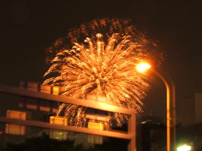
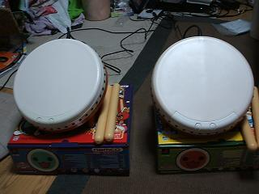
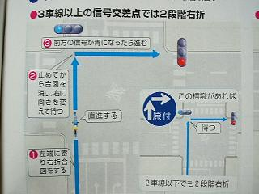
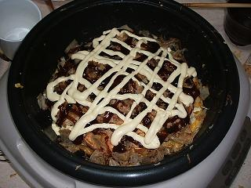

日々、想ふ
〜過去感じたことがつれづれと〜
（できるだけ最大化してお読みください）
過去、想ふ
テスト期間中だし。７/３１
土曜日です、台風の動きが気になります、タケユキです。
風の強い中今日も教習へ行ってきました。
向かい風だったせいでチャリこいでも全然進まんのね。
教習に遅れるんじゃないかとちょっと不安になってみたり。
「遅刻の原因：向かい風」とかアホだし。
まあ遅刻せずに普通に授業受けられたけど。
帰りは逆に全然漕がずに進んで楽だったけど。
あとサッカー見たくらい。
川口すごかった。
そのくらいです。
あんま書くことないなぁ。
いいこと悪いこと。７/３０
今日はバイトの給料日でした、
それでがんばった記念に三ツ矢サイダー(1.5L)買いました。
風呂上りのビールがたまらんサラリーマンみたいです、タケユキです。
今日はいいこともあったり
それと同じくらい悪いこともあったり、
人生ってこんなもんなのかねえと思ってみたりしています。
とりあえず、勉強します。
今日の家計簿：
| 雑誌 | ４００円 |
| 三ツ矢サイダー(1.5L) | １９８円 |
| 計 | ５９８円 |
週休五日になりました。７/２９
テスト二つ目終わりました、タケユキです。
来週も二つテストが控えています。
勉強をしてるといっても理解をしているというよりは
問題の解き方を覚えているといった状態。
このままでいいのだろうか。
解き方を覚えるだけっていうのは高校生レベルで
大学からはその性質だったり理論を理解しなければならないわけです。
こんなんじゃ高校のころとちっとも進歩していません。
上達したのは太鼓の叩き方くらいか。
White Lie。７/２８
明日は専門科目のテストがあります、タケユキです。
今日は英語のリスニングの授業のテストがありました。
リスニングなんで勉強のしようがないし、
やる気すらなかったんで
昨日は英語の勉強せずに明日の専門科目の勉強してました、
夜遅くまで。
英語のテストは１限なんで３時くらいに「もう寝んと」みたいな感じで就寝。
起きたら九時半。
・・・テスト始まってんじゃんけー。
テストが始まってすでに３０分経過してます。
すぐ着替えて出発、教室へ。
かなり遅れてるしもうテスト受けれんかもと
ちょっと不安になりながら教室に入ったら
先生が
「どうしたの？遅いじゃない」
「昨日夜遅くまで英語の勉強してて」
なんとかテスト受けられました。
まあテストができたかどうかは別の話ですが。
マネキン相手にアキと叫んだ男。７/２７
映画「世界の中心で〜」を見てない人は今日の日記見ないほうが
いいかもしれません、ネタバレあります、タケユキです。
今日も学校行った後に教習所行ってきました、
免許を取る上で誰もが通る道、応急救護の授業受けてきました。
免許を取ってから事故に出くわした時などのために
マネキン相手に実際に心臓マッサージや人工呼吸の練習をする授業です。
僕の通ってる教習所のマネキンには「タカオちゃん」て名前がついてるそうで
実技の際にはマネキンからちょっと遠くに立って、
「人が倒れてますっ！」
からスタートし、
心臓マッサージを始める前に意識の確認をする時、
「タカオちゃん・・」
「タカオちゃんっ！」
「タカオちゃ〜〜んっ！」
と呼びかけて意識の有無を確認し、
「誰か１１９番通報をお願いしますっ！」
と救急車を呼んでもらってから人工呼吸を開始します。
二人一組でこれをやるわけですが
そう、普通のテンションだったらできるわけがありません。
僕とペアになったのは高校生くらいの男の子で
「こんなんテンション上げていかんとやっとられんよねぇ」
「そうっすよねぇ」
てな話をしてたんだけど、間の休憩の時に
その男の子も映画「世界の中心で愛を叫ぶ（以下セカチュー）」を見てたことが判明。
しかも教官が何回かしゃべったことがある教官だったんで、
「マネキンの名前アキにしてもいいですか？」
許可を取ってセカチュー版応急救護を二人でやってみた。
空港のカウンターの位置（であろう畳の場所）から後ろを振り返り、
「アキッ！」
走ってアキ（マネキン）に駆け寄る朔（俺）、
心臓マッサージを始める前に意識の確認、
「アキ・・」
「アキ！」
「アキ〜〜ッ！」
アキ（マネキン）を抱き寄せ声がひっくり返った感じで、
「助けてくださいっ！」
「ネタはおもろいが演技力がまだまだ」
教官の心無い一言で我にかえりました。
車は急に止まれない。７/２６
太鼓の達人のやりすぎで左腕の筋痛めました、
テストのために勉強しろとのことみたいです、
そのせいでキーボード打ちづらいのに耐えながら更新、タケユキです。
今日は教習で急ブレーキの練習しました。
車ってこえぇ。
マジ危ない、超凶器。
というわけでこれからテスト勉強します。
ちょっと今回やばげなんでこれから２週間ばかり
更新短くなりそうです。
ビルの隙間から。７/２５
日曜日です、勉強日和です、タケユキです。
お金もなく、テスト勉強に追われてる俺は今日一日外出せずに
勉強しようと思ったら２７時間テレビに気を取られ、
果ては昨日買った太鼓の達人にのめりこんだと思われそうですが、
そんなことはありません、
勉強しようと思ったら２７時間テレビに気を取られ、
果ては昨日買った太鼓の達人にのめりこんで、
なおかつ夕方から友達に誘われ天神祭りに行ってきました。
明日からは勉強がんばるから、ほんと。
天神祭りってのは桜ノ宮や天満橋周辺（大阪駅から環状線で一、二駅くらい）で
開催されてるお祭りです。
梅田に着いてから友達と「金ないから歩こうで」って話になって
梅田から花火やってるとこまで歩いた。
２０分くらい歩いたら夜店も見えてきて祭りっぽくなってるとこに到着。
ドンッドンッと花火の音は聞こえるんだけど
ビルが多くて見えやしない。
やっと見えたのがこれ。

ほんま全然花火見えんくて人見に行ったようなもんでした。
今日の家計簿：
| 天神祭りで使ったお金 | ４２０円 |
| 計 | ４２０円 |
太鼓の達人。７/２４
教習順調に進んでます、タケユキです。
今日バイトの前にちょっと早めに家を出てパスポートの申請に行きました、
旅行用に貯めてたお金から一万五千ばかり下ろして。
でも梅田行きの電車の中で申請の案内読んでたら
土日はやってないことが判明。
てなわけで友達と二人梅田に着いた瞬間やることがなくなりました。
時間があるならと
ちょっと前の
日記で言ってた壊れたリモコンを
新しく取り寄せてもらうためにヨドバシカメラへ。
だいたい届くのは一週間後くらいとのことでした。
まだまだ時間があったんでついでにDVDコーナーやゲームコーナー行ったりしました。
ゲームコーナーに行ったんです。
それがいけなかったんです。
パスポート代一万五千円が今日の昼飯とか
太鼓の達人に化けてしまいました。
よくゲーセンにあるやつです。
広島帰ったときよくやるやつです。
ちゃんと太鼓コントローラー（タタコンって言うそうです）付き。
しかも太鼓コントローラーは２個。

試験前に何買ってんだか、近いうち必要であろうパスポート代をどうするのか、
自分でも見当がつきません。
冷静に文章を書いてますが、自分が手遅れなアホだというのは
うすうす気付いております、そっとしておいてください。
金がない金がないと最近ボヤいとるけども
こんなん買ってたら金なんて貯まるわけがない。
このままだと海外行けないはおろか
夏休みに帰省することもままならなくなるかもしれません、
てかもうやばい。
てなわけでこれから生活費削減貯蓄作戦を実行いたします。
要するに家計簿をつけてくってことです。
昔は手帳とかそれ用のノートみたいなのに書いてたんだけど結局挫折。
毎日続けられるにはどうしたらと悩んでいたらいいことに気付きました。
このサイトだ。
たいていのことは長続きしないタチの熱しやすく冷めやすい俺でも
なぜかこのサイトは基本毎日更新、
なら更新するついでに家計簿をつけていけばいいんじゃなかろうか、
うん超ナイスアイデア、俺天才。
というわけで今までの「今日の〜」シリーズは当分「今日の家計簿」に変わります。
貯めます、お金。
今日の家計簿：
|
|
| ヨドバシで買った太鼓一式 | １２３４４円 |
| ブラックジャックによろしく９巻 | ５５９円
|
| 昼飯（マック） | ４０９円 |
| 計 | １３３１２円 |
夏への期待、そして、不安。７/２３
炭酸っ！炭酸が飲みてえっ！
月末の生活苦、今月は予想以上の支出で
２５日（毎月の仕送り日）までは自分で沸かしたお茶しか飲めません、
そんな状態なのに明日必要なお金使ってバガボンド20巻買いました、
俺は貯蓄とか我慢とかができないダメ人間ですか、タケユキです。
世間では
ジブリマスターとしての呼び声高い僕ですが、
今日の金曜ロードショーは「となりのトトロ」でした。
バガボンドに夢中で１時間見逃しました。
これはジブリファンとしてはあってはならぬことだと思われます。
というわけでジブリマスターの看板を下ろして
次はディズニーマスターの看板を掲げようかと考え中です。
とりあえずディズニーランド行きてぇー！
ブラヴィッシーモ見てぇーー！
金がねえーーーー！
夏休み帰省する前に短期バイトでもやりますか
。
夏休みあけて友達に
「よぉ夏休みどうだったよー？」「いやー何にもなかったねーどこにも行かんかったし」
「どしたんバイトでも忙しかったん？」「いやお金なかっただけ」
こんな会話だけはぜったいしたくない。
今日の結論：金金金。
壊れかけ。７/２２
なんでか分からんけど家に人が来てます、
明日の英語のテストのための勉強会らしいです。
でも俺はその授業を取っていません。
なぜここで？部屋に矛盾が見え隠れ、タケユキです。
高３くらいの正月にmp3プレイヤー買ってから
今まで外出する時にはほぼ毎日使ってたんだけど、
最近イヤホンのリモコン部分の接触が悪くなってきました。
コードの曲げ具合でちゃんと聞こえたりはするんだけど
チャリこいでたりする時は揺れたりするんで
音が全部聞こえずにドラムとベースの音だけとか
コーラスしか聞こえなかったりとかいう事態が起きます。
でも今日はちょっと調子良かった、
バンドの演奏とかバックコーラスはちゃんと聞こえる。
ケミストリー聴いててサビに入ったら
川端のラララ〜ラ〜だけしっかり聞こえる。
でもメインボーカルの声が全く聞こえません。
オーディオとしての機能を果たしているか難しいところです。
今日のバイト：なんか他のバイトがやりたくなりました。
グ〜ッド？７/２１
今日は午前中に二回ほど教習で車に乗りました、
なんかすいてたみたいで夕方にもう一回乗れそうだって話で
夕方にも車運転してきました、
この３回目に乗った時の教官は
２回目に乗った時の教官と同じ若い男の人で
けっこう会話が弾んだ人でした。
夕方、助手席で教官を待つ。
ドアが開いて乗り込んできて目があった瞬間、
「なんだまたおまえかよ！」
めったにないであろう奇妙な再会、
それなのに一言目がそれですか俺はちょっと悲しかったです、タケユキです。
だからって学校サボったりはしてません。
ちゃんと一時間目の英語は出ました。
先生に嫌われてるからってサボったりはしません。
いつものように前回の小テストみたいなやつが返されてきました。
返す時は呼名で一人一人手渡しで返されます。
高得点だった人とかは返される時に
一言、「グ〜ッド！」とか言われて返されます。
俺の前に座ってる友達は45点で「グ〜ッド！」って言われてました。
隣の友達は42点で「グ〜ッド！」って言われてました。
なんで俺は43点で何も言われないんですか？
差別はいけないと思います。
いっつも３，４割しか点取れんのに今回やっと８割くらいとったのに。
来週はこの授業テストだそうで。
リスニングのテストだそうで。
リスニングだからテスト範囲の勉強のしようがありません。
一人が
、
「来週に向けて何を勉強したらいいんですか？」
って聞いたら、
「今までやってた予習のような勉強をやってください」
いつも予習してなかった場合はどうしろと？
「多少悪くても今までの小テストで救済しますから」
それが期待できない俺はどうしたら？
とりあえず今からアメリカにでも行ってこようか。
今日の単位：あきらめろということですね。
割り込み×追い越し×マナー違反。７/２０
朝起きました、歯医者行きました、
11時半から教習の予約入れてたと思ってダッシュで教習所へ、
配車券を出そうとカードを通したら何も出てきませんでした、
予約は13時半からだったみたいです、
そんなこんなで行ったり来たり、
こんな真夏日にはこんなミスは勘弁してくれ、タケユキです。
そういうわけで今日も車に乗って路上を運転してきました。
今日の教官はよくしゃべる人で車乗ったときから
「暑いねぇ、今日は学校休み？」
みたいな感じで教習というよりはドライブ行ってた感じでした。
３０分くらい走ってある交差点を左折した時に
対向車線から原付が右折してきて僕の車の前に出ました。
トトトトト・・・後ろからカブに乗った警察官が出てきました。
教官の話だとどうやらその交差点は二段階右折しないといけないらしい。
←２段階右折
目の前２メートルくらいのとこで原付乗った兄ちゃんが
おまわりさんに「あそこ今普通に右折したっしょー？ちょっとこっちきてー」
連れて行かれてました。
そういうのを初めて見たんだけど
なんかこの交差点ではよく起きることらしい。
それならそれで標識分かりやすいとこ置くとかすればいいのに。
それからも運転続けてたんだけど、やっぱり大阪の車はマナーが悪い。
制限速度出してるのに追い越しとか
割り込みとか普通にやってくる。
今日なんかけっこう本気で危ない割り込みされた。
で、「危ないなー」
って言ってた教官と一緒になって、
「ほんと何考えてんすかねー？こっち仮免すよ？
教習車っすよ？なめんじゃねーっての！！」
「ねー！！」
追い越されたら
「こっち制限速度ギリギリまで出とるっての！
ありえないっすよねー？
」
「ねー！！何キロだせって話よねー」
ほんとに教習だった感じがしませんでした。
今日の知らない人からメールがきた：と思ったら親父だった。
ナツゼロ？ナツイチ！７/１９
今日の朝兼昼ごはんはうまい棒（めんたいこ味とコーンポタージュ味）でした、
栄養が偏ってるというか不足しています、
バイトでまかない食べてなかったら間違いなく栄養失調、タケユキです。
というわけで海の日だった今日もバイトでした。
バイト行く前に本屋で夏のBOOKフェアみたいなものを物色してみました。
金欠で今本を買う余裕はないけど
夏休みに読むよさげな本はないかといろいろ見てた。
ちなみに今読んでるのは浅田次郎「きんぴか」。
極道と元自衛官と元官僚の三人組がメチャクチャやる話。
別に極道にも自衛官にも官僚にも興味がないわけですが、
これがなぜかめっちゃおもろい。
興味がない話を人に読みたいと思わせる浅田次郎を最近すごいと思った。
夏に何か本を一冊読もうって思ってる人にはおすすめです。
これは全３巻だけど。
今日の私信：帰省の時の写真現像したけどいる？
耐える時。７/１８
レポートがんばってます、タケユキです。
今日は昼まで寝てて洗濯して部屋の片付けやってたら
もうバイトの時間。
バイト行く途中に本屋に寄ったら
村山由佳「おししいコーヒーの入れ方」シリーズの
最新巻が文庫になってたことに気付いて購入、
どうやら一ヶ月くらい前に出てたみたい。
シリーズを集めてる身として恥ずかしい限りです。
今は回路の実験のレポート書いてるわけですが
手元にデータがなさすぎです。サボって広島帰るんじゃなかった
発振周波数ってなんですか。閾値電圧ってなんですか。
とりあえず文庫本読んでから考えたいと思います。
今日の本：でもたぶんその本にこの問題の答えは載ってません。
伝説の始まり。７/１７
お好み焼き作りました、タケユキです。

今日初めて路上デビューしてきました。
いままでは助手席だったり、後ろの席だったけども
今日はついに運転席。
ってーかね、
大阪の車超こえぇ。
教習車なんだから、仮免許運転中の看板つけてるんだから、
割り込みとか勘弁しろよ。
ちゃんと制限速度ぴったりで走ってるのになんで追い越されなきゃいけないんだよ。
こっちは初路上運転なんだぞ。
なに割り込みとか追い越しとかやってくるんだよ、
あせって対向車線に入りかけただろうが。
教官のおっちゃんもビビってただろうが。
でも運転楽しいじゃねえか。
ここから俺のドライバー人生は幕をあけるとはもっぱらの噂です。
明日は乗らないけども技能教習（運転教習）は楽しみになりそうだ。
それから夕方から友達とお好み焼き焼いて、
肉の代わりにマヨイーカ投入。
それから微妙なモノマネ大会やって、今から
「恋のから騒ぎ」見ます。
どうやら俺のモノマネは不評なようで。
まだまだ修行が必要みたいです。
今日の一言：「お〜い、たぬきどんや〜い」
後悔はしてません。７/１６
仮免許もらってきたどーー！（黄金伝説のノリで）、
タケユキです。
今日仮免許証受け取ってきました。
それから業務用スーパーで買い物。
２,１kgの大容量お好みソースを買ってみた。
重たいのなんのって。
焼きそばにも
お好みソースかける人間なんで
当分はこれでなんとか。
明日は久しぶりにお好み焼きでも作ろうか。
今日の学校：最近サボり気味だったせいで授業が全然わかりません。